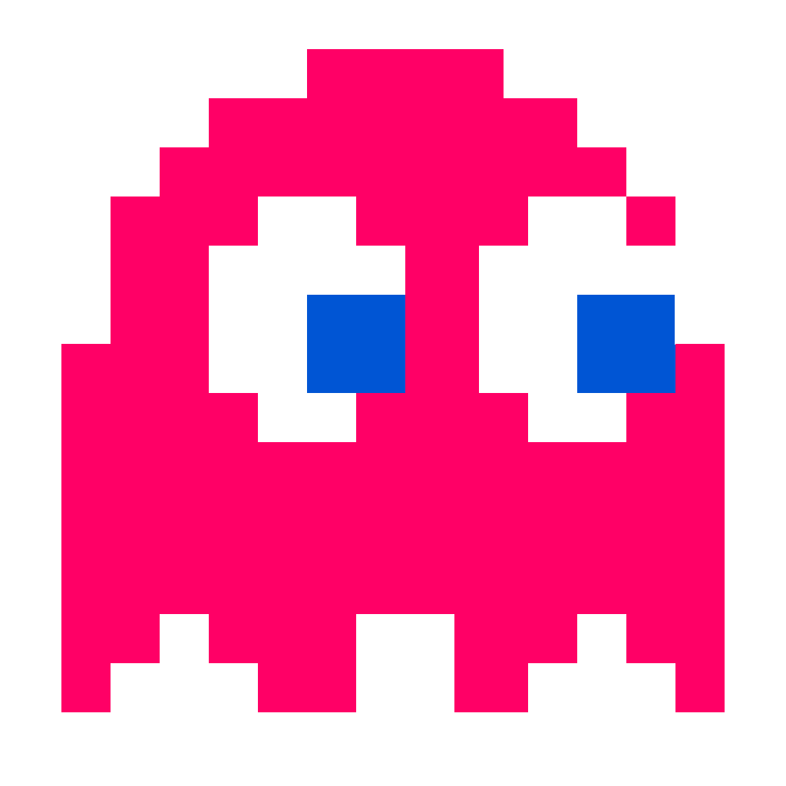

Seu Nome:
Jogar
Iniciar o jogo!
Mostrar Placar
Ajuda
1:00
Pontuação: 0

Mostrar Placar
NOTAS ALTAS
Voltar ao Menu
Como jogar: Você precisa tocar no fantasma com o mouse para marcar. Você não precisa clicar no fantasma para pontuar! - Passe o mouse sobre o fantasma! Tente marcar mais pontos e divirta-se!
Voltar ao Menu